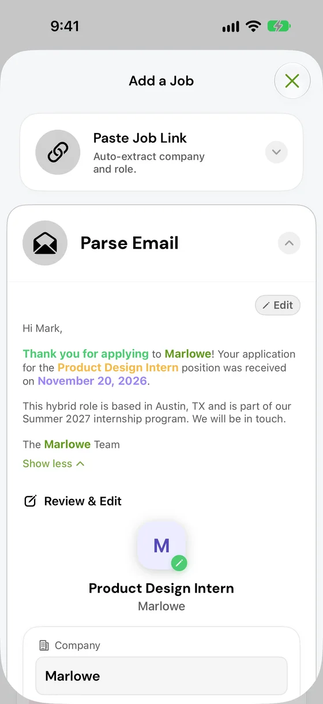
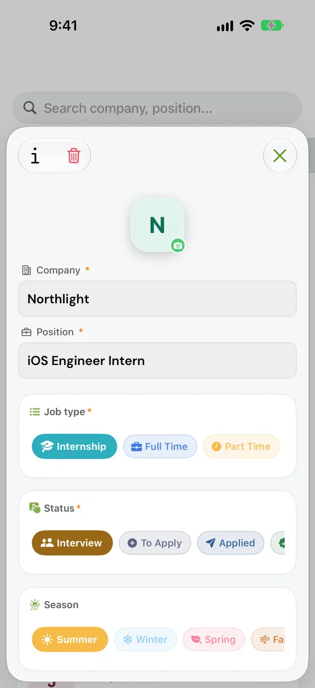
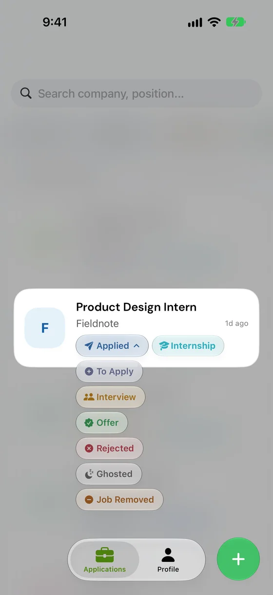

Cards instead of columns
Cards organize what matters and keep each application easy to tell apart and review: position first, then company and how long ago I applied, then status and type. The rest waits in the detail view.
product engineering, iOS
A mobile-first job application tracker that simplifies application management through intelligent email parsing.



View the code on GitHub → Shown with sample data.
I tracked my job applications in a CSV database, and it got frustrating.
I needed it most away from my laptop, when an application update came in. I also wanted an easy way to show people which positions I'd applied for, in something more visual, intuitive and convenient on the go.
I took CodePath's iOS 101 course and really enjoyed it. It made me want to learn more SwiftUI and build more native iOS apps, and I've always enjoyed Apple's app ecosystem. AppNest let me do that while solving a problem from my own life.
First priority: make jobs easier to add. Typing in every detail was one of the biggest frustrations, which led to email parsing and job-link parsing. Both cut repetitive entry and make tracking more convenient.
Email, job link, CSV or by hand, all from the green + button. Whichever way a job comes in, I check it and edit it before it's saved.
My favorite feature, and the one I'm most proud of. Pasting the update replaces typing it in.
Paste the email and tap Parse.
What it found is colored in the email itself, so I can see where each answer came from.
Company, position, status, type, season, date and location are filled in. I fix anything that's off in Review & Edit, then save.
Filter by status pill, search, then open an application.
Change the status, add a note, save.
Company, title and job type fill in from Greenhouse, Lever, Ashby or Workday.
Columns map by meaning, and incomplete rows are flagged before they come in.
That's how I wanted AppNest to feel. The design evolved directly in SwiftUI, without Figma designs or wireframes first, and I made these decisions as the person using it.
Cards organize what matters and keep each application easy to tell apart and review: position first, then company and how long ago I applied, then status and type. The rest waits in the detail view.

They separate one kind of information from another, and they're how you get around: tap a chip to filter, or a card's status to change it in place. Type, season and work mode filters stay on screen as removable chips. Every status keeps its color, next to an icon and a word.

I prioritized the experience and interactions, sometimes even more than the visual appearance. A swipe deletes a card and offers Undo; deleting a cycle means holding the button. Haptics give a light tap for a status menu, a success pattern for a save and a warning for a link it can't use.
Text scales with Dynamic Type, press animations respect Reduce Motion, and there's a light and a dark theme. I keep iterating on haptic feedback, navigation and interaction flow, visual feedback, ease of use, interface clarity and general visual refinement.
The parser is a hybrid. No single technique handles recruiting emails well, so it layers several and runs all of them on the device, with no external NLP service.
Regular expressions look for recruiters' phrasings, like “role at…” or “your application for the…”, roughly from most specific to least. They're the most precise, so they go first.
If no pattern finds the company, NLTagger looks for organization names, skipping job sites like LinkedIn and Indeed, and job titles it mistakes for companies.
NSDataDetector finds the date. It takes a bare “March 3” as the next one, but an application date is in the past, so the parser moves it back a year.
Job IDs, locations and seasons come off the title. One that reads like a sentence or repeats the company is thrown out: a blank is better than a wrong answer. Then I review it.

The email's text and all the parsing. Applications are stored on the device with SwiftData.
Job-board lookups (Greenhouse, Lever, Ashby), logos and company suggestions from Logo.dev, including for a company found in an email, and city suggestions from Apple Maps.
Getting extraction to work across different recruiting email formats was the hardest technical challenge. Two problems kept coming back.
Sometimes the position title came out overly long, with unrelated parts of the email in it. Here it should stop after “Intern.”
Machine Learning Intern - Full-Time - United States - July Start 210774111
Sometimes it failed because the email used an unfamiliar structure. Here the title is in brackets behind a job number, and the company is only in the sign-off.
…our open position ( 01884409 Systems Engineer Intern ).
I experimented with real job application emails and refined the logic for more variations, using Claude Code and ChatGPT as development assistants to help test example emails, diagnose parsing mistakes and refine the code.
A wrong company name looks exactly like a right one, and a pattern that fixes one format can quietly break another. So automated tests, written with Swift's Testing framework and AI assistance, give the parser an email or a sentence and state what should come out. When a pattern changes, the older cases show whether something broke.
| It extracts | By looking for | Without falling for |
|---|---|---|
| Company name | Known phrasings, then the sign-off line, then NLTagger |
“Stripe Talent Community” as the name of a company |
| Position title | Known phrasings, or a title on its own line | “our open position” as a job called “open” |
| Application status | Offer, rejection, interview and confirmation phrases | “If you are selected for an interview…” as an interview |
| Employment type and season | Words like internship, co-op or new grad; a season name | “if your skills fall short” as the fall season |
| Application date | A date from NSDataDetector, or today if there isn't one |
An application date in the future |
| Location and work mode | A U.S. “City, ST” and phrases like “hybrid role” | Two capitals that aren't a state |
@Test("a hypothetical interview is not an interview")
func hypotheticalIsNotStatus() {
let email = "Thank you for applying. If you are selected for an interview, we will be in touch."
#expect(parser.parse(email).status == .applied)
}From EmailParserTests.swift. Its cases cover company, position, status, type, season, date, location and whole emails. Other tests cover link parsing, CSV seasons, data backup and the share extension's handoff.
@Query, so a change in one place shows up everywhere without extra wiring.@Observable view model handles the email form, the most complex one. It holds the draft until I save, separate from stored data.September 2025
Application models, a job detail screen, date and status controls, early UI refinements. Mostly tracking by hand. Pill pickers, notes and resume upload by month's end, cards in early October.
March 2026
SwiftData, an expanded profile dashboard, CSV export and the first on-device email parser. Redesigned cards and theme, sorting and filtering. Search took shape from February into April.
May–June 2026
CSV import with a preview, job links, cycles, reminders, interview prep and logos. A lot of work on navigation, haptics, animations, gestures and feedback. An early share extension, tried and removed.
September–November 2026
Parser tests and more patterns, recovery for a database that won't open, Lever and Ashby title lookups, VoiceOver labels on icon-only buttons and a rebuilt share extension.
I use AppNest to track my own job applications, and since adopting it I haven't returned to my old CSV workflow.
Iteration and testing matter. A product is never truly finished.
There are always ways to refine features, address issues and improve the experience. Building AppNest reinforced that I should keep improving a product that already works, instead of treating the first implementation as final.